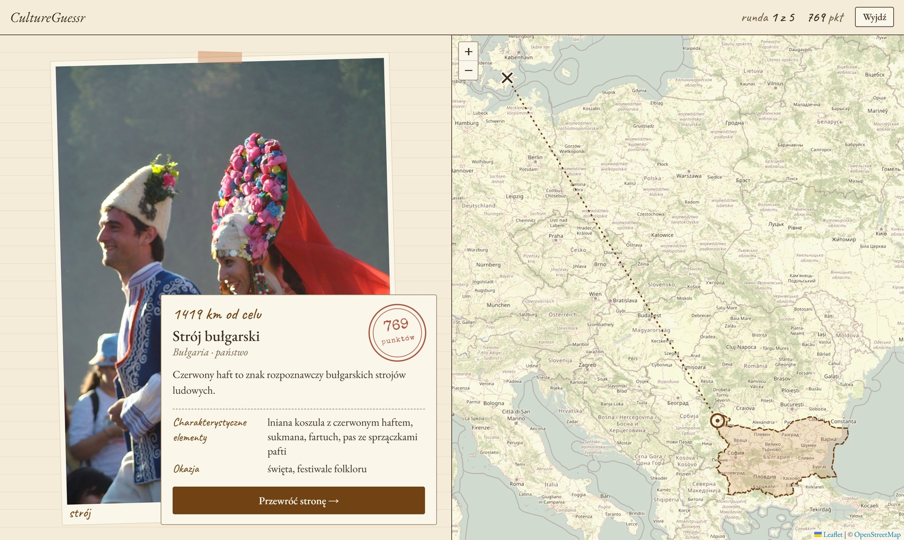
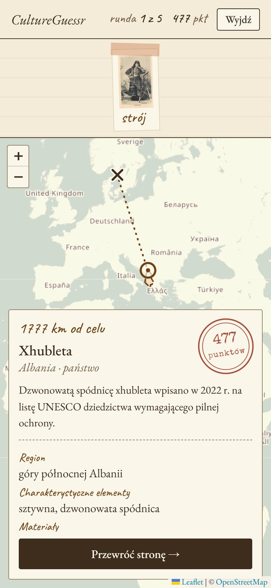

BEST Hacks 2026 · Code For Culture
GeoGuessr dla tradycji. Widzisz strój, potrawę albo napis i zgadujesz na mapie Europy, skąd pochodzi. Po każdej rundzie dowiadujesz się, co to jest.
Stroje, regionalne potrawy, gwary i rzemiosło przetrwały stulecia, ale młodzi znają je coraz słabiej. Część z nich UNESCO uznaje już za dziedzictwo wymagające pilnej ochrony. Muzea mają zbiory, tylko mało kto zagląda do nich sam z siebie.
Gra, w której zamiast widoku ulicy widzisz element kultury. Najpierw zgadujesz, potem dostajesz kartę faktów: nazwę, region, okazję i materiały. Ciekawość pojawia się przed odpowiedzią, więc wiedza zostaje w pamięci.

trafienie w obszar = 5000 pkt, poza nim liczy się odległość do granicy
karta faktów po każdej rundzie
działa na telefonie, instaluje się jak aplikacja

Nasza przewaga: emocje GeoGuessra i treść muzeum etnograficznego. Każda instytucja dodaje własny zestaw w panelu, bez programisty.